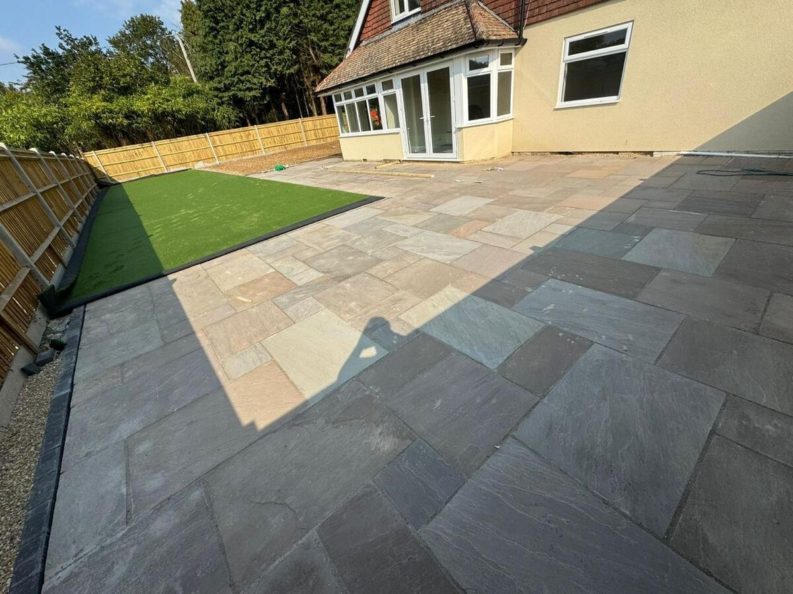
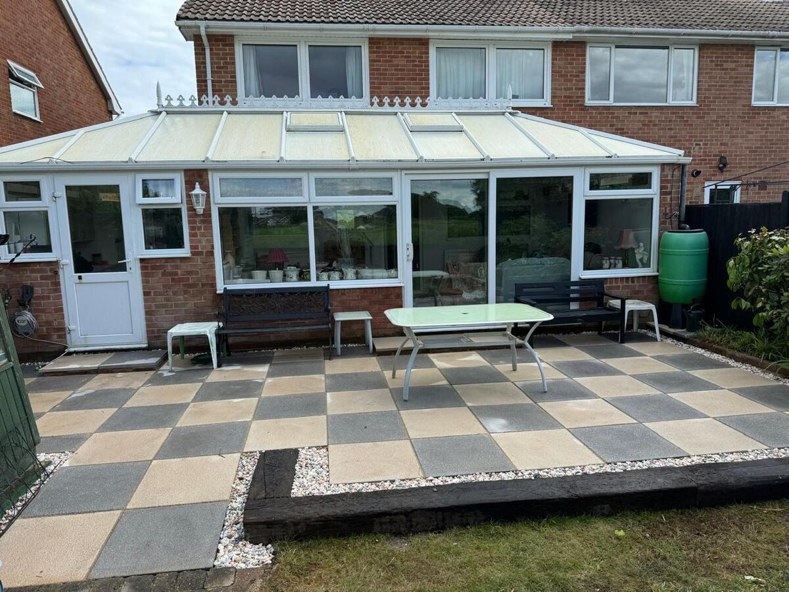

The rise of home improvement television and social media has inspired a generation of DIY enthusiasts. And for good reason — there is genuine satisfaction in creating something with your own hands. But when it comes to landscaping, the gap between a DIY result and a professional one is often far wider than people expect.
This is not a hard sell. There are landscaping tasks that a competent DIYer can tackle perfectly well. But there are also projects where professional expertise makes the difference between a garden you love and one you regret. Let us be honest about both.
What You Can DIY (Confidently)
Some garden tasks are well within the reach of a capable homeowner:
- Planting — Borders, shrubs, trees and seasonal bedding. Research your soil type, choose appropriate species and follow planting guidance.
- Lawn care — Mowing, feeding, aerating and overseeding are straightforward with the right equipment.
- Small raised beds — Pre-cut sleeper beds or simple timber planting frames can be assembled without specialist skills.
- Garden maintenance — Pressure washing, weeding, pruning and general tidying are labour-intensive but not technically demanding.
- Simple gravel areas — Laying membrane and spreading gravel is achievable, though getting levels and edging right requires care.
- Painting and staining — Refreshing existing fences, sheds and timber features is a weekend job.
Where DIY Gets Risky
The following projects are where DIY attempts most commonly lead to problems:
Patio Installation
A patio looks simple from above — it is flat slabs on the ground. But beneath those slabs is a carefully engineered sub-base that determines whether the patio remains level, drains correctly and withstands frost heave for 20 years.
Common DIY patio problems include:
- Inadequate sub-base leading to sunken or uneven slabs within 2–3 years
- Poor falls causing water to pool on the surface or run towards the house
- Incorrect jointing that allows weed growth and deterioration
- Uneven cutting that looks rough and unprofessional
- Damage to drainage or underground services during excavation
A professionally installed patio on a proper sub-base will outlast a DIY one by a factor of three to five. Over its lifetime, the professional patio is almost always cheaper per year of use.
Fencing
Fence posts that are not set deep enough or not properly braced will lean within months — especially in the exposed conditions common across West Sussex. Professional installation means concrete-set posts at the correct depth, gravel boards to prevent timber rot, and a straight, level run that looks right and lasts.
Retaining Walls
This is where DIY becomes genuinely dangerous. A retaining wall that fails can cause structural damage, injury and costly remediation. Retaining walls above 600mm must be properly engineered with foundations, drainage and structural reinforcement. This is not a weekend project — it requires professional knowledge and experience.
Drainage
Poor drainage ruins gardens. Getting falls, pipe sizes, soakaway dimensions and connection points right requires understanding of your specific site conditions. A drainage system that does not work is worse than no drainage system at all — it gives false confidence while water continues to cause damage beneath the surface.
The True Cost Comparison
DIY is often assumed to be cheaper. But the full picture is more nuanced:
| Factor | DIY | Professional |
|---|---|---|
| Materials | Full retail price | Trade pricing (15–30% less) |
| Tools | Purchase or hire (£200–1,000+) | Included |
| Time | Multiple weekends (your time has value) | 3–7 days typically |
| Waste removal | Skip hire + your labour | Included |
| Mistakes | Materials wasted, rework needed | Right first time |
| Longevity | 5–10 years typical | 20–30 years |
| Resale value | Minimal impact or negative | Adds genuine value |
When you factor in trade material pricing, no tool hire costs, no wasted materials, and a result that lasts three times as long, professional landscaping often works out comparable to — or cheaper than — doing it yourself.
The Quality Gap
This is the factor that matters most. There is a visible difference between professional landscaping and DIY. Tight joints. Precise cuts. Level surfaces. Consistent spacing. Clean lines. These details are the product of years of experience and the right tools used by people who do this work every day.
A professionally landscaped garden adds value to your property. A poorly executed DIY job can actively reduce it. Estate agents consistently report that garden quality influences buyer decisions — particularly at the premium end of the market.

When to Hire a Professional
Our honest recommendation:
- Always hire a professional for: Patios, driveways, retaining walls, drainage, groundworks, water features, and any project involving structural elements.
- Consider a professional for: Fencing (particularly long runs or exposed sites), decking (especially raised or multi-level), and artificial grass (the sub-base preparation is critical).
- DIY with confidence: Planting, lawn care, small raised beds, garden maintenance, painting and staining, simple gravel areas.
What to Look For in a Landscaper
If you decide to hire a professional, choose carefully:
- Portfolio of work — Ask to see completed projects, ideally in person. Browse our gallery for examples of our work.
- Transparent quoting — A detailed quote should itemise materials, labour, groundworks and waste removal. Beware vague or verbal estimates.
- No excessive deposits — Reputable landscapers do not ask for large upfront payments. A small deposit to secure a start date is normal.
- Insurance — Public liability insurance is essential. Ask to see proof.
- Communication — You should feel comfortable asking questions and confident in the answers you receive.
- Aftercare — A good landscaper stands behind their work and is available if issues arise.
The A Sterling Landscapes Approach
We are not the cheapest landscaper in West Sussex, and we have no desire to be. What we offer is exceptional quality, transparent pricing and a result that our clients are genuinely proud of. Every project, regardless of size, receives the same attention to detail — because your garden deserves nothing less.
If you are weighing up DIY against hiring a professional, we are happy to give honest advice — even if the answer is that your project is suitable for DIY. Get in touch for a free, no-obligation consultation.
Get Honest Advice on Your Project
Not sure whether to DIY or hire a pro? We will give you straight-talking advice — no pressure, no obligation.